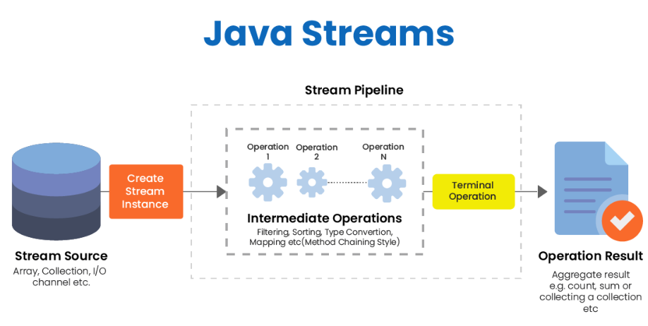
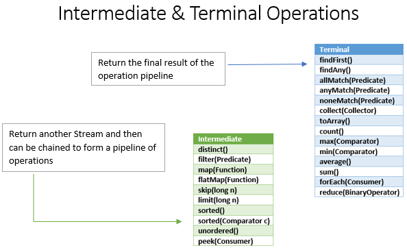

🌊 Streams en Java
🧠 1. ¿Qué es un Stream?
Un Stream en Java es una forma de procesar una secuencia de datos utilizando operaciones encadenadas.
No hay que confundirlo con los streams de entrada/salida, como los usados para leer ficheros.
Un Stream permite trabajar con datos de una colección, array u otra fuente de una forma más declarativa.
Es decir, en lugar de escribir paso a paso cómo recorrer una lista, indicamos qué queremos conseguir.
List<String> nombres = List.of("Ana", "Pedro", "Lucía", "Luis");
nombres.stream()
.filter(nombre -> nombre.length() > 4)
.forEach(System.out::println);
Este código significa:
- Coge la lista de nombres.
- Crea un stream.
- Quédate solo con los nombres de más de 4 letras.
- Muestra cada resultado por pantalla.
🔁 2. Bucle tradicional vs Stream
Antes de aprender streams, vamos a comparar dos formas de hacer lo mismo.
✅ Con bucle tradicional
List<String> nombres = List.of("Ana", "Pedro", "Lucía", "Luis");
List<String> resultado = new ArrayList<>();
for (String nombre : nombres) {
if (nombre.length() > 4) {
resultado.add(nombre.toUpperCase());
}
}
System.out.println(resultado);
✅ Con Stream
List<String> nombres = List.of("Ana", "Pedro", "Lucía", "Luis");
List<String> resultado = nombres.stream()
.filter(nombre -> nombre.length() > 4)
.map(String::toUpperCase)
.toList();
System.out.println(resultado);
🧩 ¿Qué cambia?
| Bucle tradicional | Stream |
|---|---|
| Decimos paso a paso cómo recorrer la lista. | Decimos qué transformación queremos hacer. |
| Usamos variables auxiliares. | Encadenamos operaciones. |
| Es muy claro para algoritmos sencillos. | Es muy limpio para filtros, transformaciones y búsquedas. |
| Puede ser mejor cuando hay mucha lógica compleja. | Puede ser mejor cuando procesamos colecciones. |
🧱 3. Partes de un Stream
Una tubería de Stream suele tener tres partes:
fuente.stream()
.operacionIntermedia()
.operacionIntermedia()
.operacionTerminal();

🟦 1. Fuente de datos
Es de dónde salen los datos.
List<Integer> numeros = List.of(1, 2, 3, 4, 5);
numeros.stream();
También podemos crear streams desde arrays:
String[] nombres = {"Ana", "Luis", "Marta"};
Arrays.stream(nombres);
O directamente:
Stream.of("rojo", "verde", "azul");
🟨 2. Operaciones intermedias
Transforman el stream y devuelven otro stream.
Ejemplos:
filter()
map()
sorted()
distinct()
limit()
skip()
peek()
flatMap()
🟥 3. Operaciones terminales
Cierran el stream y producen un resultado final.
Ejemplos:
forEach()
toList()
collect()
count()
findFirst()
anyMatch()
allMatch()
noneMatch()
min()
max()
reduce()
⚠️ 4. Idea clave: los Streams son perezosos
Las operaciones intermedias no se ejecutan hasta que aparece una operación terminal.
List<String> nombres = List.of("Ana", "Pedro", "Lucía");
nombres.stream()
.filter(nombre -> {
System.out.println("Filtrando: " + nombre);
return nombre.length() > 4;
});
Este código no imprime nada, porque falta una operación terminal.
Ahora sí:
nombres.stream()
.filter(nombre -> {
System.out.println("Filtrando: " + nombre);
return nombre.length() > 4;
})
.forEach(System.out::println);
🧠 Recuerda
Sin operación terminal, el stream no se pone en marcha.
🦄 Funciones de Stream

🛑 Operaciones intermedias
🔍 filter(): filtrar elementos
filter() sirve para quedarse solo con los elementos que cumplen una condición.
Recibe un Predicate<T>, es decir, una función que devuelve true o false.
List<Integer> numeros = List.of(2, 5, 8, 11, 14);
List<Integer> pares = numeros.stream()
.filter(n -> n % 2 == 0)
.toList();
System.out.println(pares); // [2, 8, 14]
🧪 Otro ejemplo
List<String> palabras = List.of("sol", "montaña", "río", "ordenador");
List<String> largas = palabras.stream()
.filter(palabra -> palabra.length() >= 5)
.toList();
System.out.println(largas); // [montaña, ordenador]
🔄 map(): transformar elementos
map() sirve para transformar cada elemento en otro.
Recibe una Function<T, R>.
List<String> nombres = List.of("ana", "pedro", "lucía");
List<String> mayusculas = nombres.stream()
.map(String::toUpperCase)
.toList();
System.out.println(mayusculas); // [ANA, PEDRO, LUCÍA]
🧪 Transformar objetos en datos simples
class Alumno {
private String nombre;
private double nota;
public Alumno(String nombre, double nota) {
this.nombre = nombre;
this.nota = nota;
}
public String getNombre() {
return nombre;
}
public double getNota() {
return nota;
}
}
List<Alumno> alumnos = List.of(
new Alumno("Ana", 8.5),
new Alumno("Luis", 4.2),
new Alumno("Marta", 6.7)
);
List<String> nombres = alumnos.stream()
.map(Alumno::getNombre)
.toList();
System.out.println(nombres); // [Ana, Luis, Marta]
🧹 distinct(): eliminar duplicados
List<String> nombres = List.of("Ana", "Luis", "Ana", "Marta", "Luis");
List<String> sinRepetidos = nombres.stream()
.distinct()
.toList();
System.out.println(sinRepetidos); // [Ana, Luis, Marta]
En objetos propios,
distinct()depende de queequals()yhashCode()estén bien definidos.
📏 limit() y skip()
limit()
Se queda con los primeros elementos.
List<Integer> numeros = List.of(10, 20, 30, 40, 50);
List<Integer> primerosTres = numeros.stream()
.limit(3)
.toList();
System.out.println(primerosTres); // [10, 20, 30]
skip()
Salta los primeros elementos.
List<Integer> numeros = List.of(10, 20, 30, 40, 50);
List<Integer> sinLosDosPrimeros = numeros.stream()
.skip(2)
.toList();
System.out.println(sinLosDosPrimeros); // [30, 40, 50]
🔡 sorted(): ordenar elementos
Orden natural
List<Integer> numeros = List.of(5, 1, 9, 3);
List<Integer> ordenados = numeros.stream()
.sorted()
.toList();
System.out.println(ordenados); // [1, 3, 5, 9]
Ordenar objetos
List<Alumno> alumnos = List.of(
new Alumno("Ana", 8.5),
new Alumno("Luis", 4.2),
new Alumno("Marta", 6.7)
);
List<Alumno> ordenadosPorNota = alumnos.stream()
.sorted(Comparator.comparing(Alumno::getNota))
.toList();
Orden inverso
List<Alumno> ordenadosPorNotaDesc = alumnos.stream()
.sorted(Comparator.comparing(Alumno::getNota).reversed())
.toList();
👀 peek(): mirar sin transformar
peek() permite ver qué elementos pasan por una parte del stream.
Se usa sobre todo para depurar.
List<String> resultado = Stream.of("uno", "dos", "tres", "cuatro")
.filter(p -> p.length() > 3)
.peek(p -> System.out.println("Después del filtro: " + p))
.map(String::toUpperCase)
.peek(p -> System.out.println("Después del map: " + p))
.toList();
⚠️ Importante
No conviene usar peek() para modificar datos. Para transformar datos, usa map().
📦 flatMap(): aplanar estructuras
flatMap() se usa cuando tenemos estructuras anidadas.
Por ejemplo, una lista de listas:
List<List<String>> grupos = List.of(
List.of("Ana", "Luis"),
List.of("Marta", "Pedro"),
List.of("Lucía")
);
Si usamos map(), obtenemos listas dentro de un stream:
grupos.stream()
.map(grupo -> grupo.stream());
Con flatMap(), unimos todos los elementos en un único stream:
List<String> todos = grupos.stream()
.flatMap(grupo -> grupo.stream())
.toList();
System.out.println(todos); // [Ana, Luis, Marta, Pedro, Lucía]
Con referencia de método:
List<String> todos = grupos.stream()
.flatMap(List::stream)
.toList();
🛑 Operaciones terminales
Las operaciones terminales son las que ejecutan realmente la tubería.
🖨️ forEach()
Sirve para hacer algo con cada elemento.
List<String> nombres = List.of("Ana", "Luis", "Marta");
nombres.stream()
.forEach(System.out::println);
⚠️ Cuidado
forEach() no se suele usar para construir resultados. Para eso normalmente usamos toList() o collect().
📋 toList() y collect()
toList()
Forma moderna y sencilla para obtener una lista.
List<String> nombres = List.of("Ana", "Luis", "Marta");
List<String> resultado = nombres.stream()
.filter(n -> n.length() > 3)
.toList();
collect(Collectors.toList())
Forma clásica, muy habitual en ejemplos de Java 8.
List<String> resultado = nombres.stream()
.filter(n -> n.length() > 3)
.collect(Collectors.toList());
collect(Collectors.toSet())
Set<String> resultado = nombres.stream()
.collect(Collectors.toSet());
🔢 count()
Devuelve cuántos elementos quedan en el stream.
List<Integer> numeros = List.of(1, 2, 3, 4, 5, 6);
long cantidadPares = numeros.stream()
.filter(n -> n % 2 == 0)
.count();
System.out.println(cantidadPares); // 3
🔎 findFirst() y findAny()
findFirst()
Devuelve el primer elemento encontrado.
List<String> nombres = List.of("Ana", "Pedro", "Lucía");
Optional<String> primeroLargo = nombres.stream()
.filter(n -> n.length() > 4)
.findFirst();
System.out.println(primeroLargo.orElse("No encontrado"));
findAny()
Devuelve algún elemento que cumpla la condición. En streams secuenciales suele parecerse a findFirst(), pero en streams paralelos puede devolver otro.
Optional<String> alguno = nombres.stream()
.filter(n -> n.length() > 4)
.findAny();
✅ anyMatch(), allMatch() y noneMatch()
Estas operaciones devuelven un booleano.
anyMatch()
¿Algún elemento cumple la condición?
boolean hayAprobados = alumnos.stream()
.anyMatch(a -> a.getNota() >= 5);
allMatch()
¿Todos cumplen la condición?
boolean todosAprobados = alumnos.stream()
.allMatch(a -> a.getNota() >= 5);
noneMatch()
¿Ninguno cumple la condición?
boolean nadieTieneDiez = alumnos.stream()
.noneMatch(a -> a.getNota() == 10);
🏆 min() y max()
Devuelven un Optional, porque el stream podría estar vacío.
List<Integer> numeros = List.of(4, 9, 1, 7);
Optional<Integer> minimo = numeros.stream().min(Integer::compareTo);
Optional<Integer> maximo = numeros.stream().max(Integer::compareTo);
System.out.println(minimo.orElse(0)); // 1
System.out.println(maximo.orElse(0)); // 9
Con objetos
Optional<Alumno> mejorAlumno = alumnos.stream()
.max(Comparator.comparing(Alumno::getNota));
mejorAlumno.ifPresent(a -> System.out.println(a.getNombre()));
🧮 reduce(): reducir a un único valor
reduce() permite combinar todos los elementos hasta obtener un único resultado.
Sumar números
List<Integer> numeros = List.of(1, 2, 3, 4);
int suma = numeros.stream()
.reduce(0, (a, b) -> a + b);
System.out.println(suma); // 10
Con referencia de método:
int suma = numeros.stream()
.reduce(0, Integer::sum);
Producto
int producto = numeros.stream()
.reduce(1, (a, b) -> a * b);
System.out.println(producto); // 24
Concatenar textos
List<String> palabras = List.of("Java", "es", "potente");
String frase = palabras.stream()
.reduce("", (a, b) -> a + " " + b)
.trim();
System.out.println(frase); // Java es potente
🧺 Collectors.groupingBy(): agrupar datos
Una de las operaciones más útiles con streams es agrupar.
class Producto {
private String nombre;
private String categoria;
private double precio;
public Producto(String nombre, String categoria, double precio) {
this.nombre = nombre;
this.categoria = categoria;
this.precio = precio;
}
public String getNombre() {
return nombre;
}
public String getCategoria() {
return categoria;
}
public double getPrecio() {
return precio;
}
}
List<Producto> productos = List.of(
new Producto("Ratón", "Informática", 15.99),
new Producto("Teclado", "Informática", 29.99),
new Producto("Cuaderno", "Papelería", 2.50),
new Producto("Bolígrafo", "Papelería", 1.20)
);
Map<String, List<Producto>> porCategoria = productos.stream()
.collect(Collectors.groupingBy(Producto::getCategoria));
System.out.println(porCategoria);
💰 Collectors.summingDouble(), averagingDouble() y counting()
Sumar precios por categoría
Map<String, Double> totalPorCategoria = productos.stream()
.collect(Collectors.groupingBy(
Producto::getCategoria,
Collectors.summingDouble(Producto::getPrecio)
));
Precio medio por categoría
Map<String, Double> mediaPorCategoria = productos.stream()
.collect(Collectors.groupingBy(
Producto::getCategoria,
Collectors.averagingDouble(Producto::getPrecio)
));
Contar productos por categoría
Map<String, Long> cantidadPorCategoria = productos.stream()
.collect(Collectors.groupingBy(
Producto::getCategoria,
Collectors.counting()
));
⚡ Streams de tipos primitivos
Java tiene streams especiales para algunos tipos primitivos:
IntStream
LongStream
DoubleStream
Son útiles para trabajar con números sin tener que usar Integer, Long o Double.
int suma = IntStream.of(1, 2, 3, 4, 5)
.sum();
double media = IntStream.of(1, 2, 3, 4, 5)
.average()
.orElse(0);
int maximo = IntStream.of(1, 2, 3, 4, 5)
.max()
.orElse(0);
Pasar de Stream<Integer> a IntStream
List<Integer> numeros = List.of(1, 2, 3, 4, 5);
int suma = numeros.stream()
.mapToInt(Integer::intValue)
.sum();
🧭 Orden recomendado para leer un Stream
Cuando veas un stream, léelo de arriba a abajo como una receta.
List<String> resultado = alumnos.stream()
.filter(a -> a.getNota() >= 5)
.sorted(Comparator.comparing(Alumno::getNota).reversed())
.map(Alumno::getNombre)
.toList();
Traducción:
- Coge los alumnos.
- Quédate solo con los aprobados.
- Ordénalos por nota de mayor a menor.
- Transforma cada alumno en su nombre.
- Guarda el resultado en una lista.
🧨 Errores típicos con Streams
❌ Error 1: olvidar la operación terminal
numeros.stream()
.filter(n -> n > 5);
No hace nada útil, porque falta una operación terminal.
✅ Correcto:
List<Integer> mayores = numeros.stream()
.filter(n -> n > 5)
.toList();
❌ Error 2: intentar reutilizar un stream
Stream<String> stream = nombres.stream();
stream.forEach(System.out::println);
stream.count(); // Error
Un stream se consume una vez.
✅ Correcto:
nombres.stream().forEach(System.out::println);
long cantidad = nombres.stream().count();
❌ Error 3: modificar la lista mientras se recorre
nombres.stream()
.forEach(nombre -> nombres.remove(nombre)); // Mala idea
✅ Mejor crear una nueva lista:
List<String> filtrados = nombres.stream()
.filter(nombre -> nombre.length() > 3)
.toList();
❌ Error 4: usar streams para todo
No siempre hay que usar streams.
Este código es perfectamente válido:
for (int i = 0; i < 10; i++) {
System.out.println(i);
}
Los streams brillan especialmente cuando trabajamos con colecciones y queremos filtrar, transformar, buscar, agrupar o reducir datos.
🆚 ¿Cuándo usar Stream y cuándo usar bucle?
Usa Stream cuando...
✅ Quieres filtrar datos.
✅ Quieres transformar una colección en otra.
✅ Quieres buscar elementos.
✅ Quieres agrupar o contar datos.
✅ La operación se lee bien encadenada.
✅ No necesitas modificar variables externas.
Usa bucle cuando...
✅ La lógica tiene muchos pasos complejos.
✅ Necesitas break o continue de forma clara.
✅ Estás modificando varias variables.
✅ El stream queda menos legible que el bucle.
✅ Estás empezando y necesitas entender bien el recorrido.
🧩 Ejemplo completo 1: filtrar, ordenar y transformar
Queremos obtener los nombres de los alumnos aprobados, ordenados por nota de mayor a menor.
import java.util.Comparator;
import java.util.List;
class Alumno {
private String nombre;
private int edad;
private double nota;
public Alumno(String nombre, int edad, double nota) {
this.nombre = nombre;
this.edad = edad;
this.nota = nota;
}
public String getNombre() {
return nombre;
}
public int getEdad() {
return edad;
}
public double getNota() {
return nota;
}
}
public class Main {
public static void main(String[] args) {
List<Alumno> alumnos = List.of(
new Alumno("Ana", 19, 8.5),
new Alumno("Luis", 21, 4.2),
new Alumno("Marta", 20, 9.1),
new Alumno("Pedro", 18, 6.3)
);
List<String> aprobados = alumnos.stream()
.filter(a -> a.getNota() >= 5)
.sorted(Comparator.comparing(Alumno::getNota).reversed())
.map(Alumno::getNombre)
.toList();
System.out.println(aprobados);
}
}
Resultado:
[Marta, Ana, Pedro]
🧩 Ejemplo completo 2: productos caros por categoría
import java.util.List;
import java.util.Map;
import java.util.stream.Collectors;
class Producto {
private String nombre;
private String categoria;
private double precio;
public Producto(String nombre, String categoria, double precio) {
this.nombre = nombre;
this.categoria = categoria;
this.precio = precio;
}
public String getNombre() {
return nombre;
}
public String getCategoria() {
return categoria;
}
public double getPrecio() {
return precio;
}
}
public class Main {
public static void main(String[] args) {
List<Producto> productos = List.of(
new Producto("Ratón", "Informática", 15.99),
new Producto("Teclado", "Informática", 29.99),
new Producto("Monitor", "Informática", 149.99),
new Producto("Cuaderno", "Papelería", 2.50),
new Producto("Agenda", "Papelería", 8.99)
);
Map<String, List<String>> carosPorCategoria = productos.stream()
.filter(p -> p.getPrecio() > 10)
.collect(Collectors.groupingBy(
Producto::getCategoria,
Collectors.mapping(Producto::getNombre, Collectors.toList())
));
System.out.println(carosPorCategoria);
}
}
Resultado aproximado:
{Informática=[Ratón, Teclado, Monitor]}
🧪 Mini chuleta de operaciones
| Operación | Tipo | Sirve para... | Devuelve |
|---|---|---|---|
filter() |
Intermedia | Filtrar elementos | Stream<T> |
map() |
Intermedia | Transformar elementos | Stream<R> |
flatMap() |
Intermedia | Aplanar estructuras | Stream<R> |
sorted() |
Intermedia | Ordenar | Stream<T> |
distinct() |
Intermedia | Quitar duplicados | Stream<T> |
limit() |
Intermedia | Limitar cantidad | Stream<T> |
skip() |
Intermedia | Saltar elementos | Stream<T> |
peek() |
Intermedia | Depurar | Stream<T> |
forEach() |
Terminal | Recorrer y ejecutar acción | void |
toList() |
Terminal | Convertir a lista | List<T> |
collect() |
Terminal | Recoger o agrupar | Depende |
count() |
Terminal | Contar | long |
findFirst() |
Terminal | Buscar el primero | Optional<T> |
anyMatch() |
Terminal | Comprobar si alguno cumple | boolean |
allMatch() |
Terminal | Comprobar si todos cumplen | boolean |
noneMatch() |
Terminal | Comprobar si ninguno cumple | boolean |
min() |
Terminal | Obtener mínimo | Optional<T> |
max() |
Terminal | Obtener máximo | Optional<T> |
reduce() |
Terminal | Reducir a un valor | Depende |
🧠 Relación con interfaces funcionales
Los streams usan muchas de las interfaces funcionales que ya hemos visto.
| Método | Interfaz funcional | Ejemplo |
|---|---|---|
filter() |
Predicate<T> |
n -> n > 5 |
map() |
Function<T, R> |
String::length |
forEach() |
Consumer<T> |
System.out::println |
sorted() |
Comparator<T> |
Comparator.comparing(Alumno::getNota) |
reduce() |
BinaryOperator<T> |
Integer::sum |
✍️ Actividades guiadas
Actividad 1
Dada esta lista:
List<Integer> numeros = List.of(3, 8, 12, 5, 20, 7, 1);
Crea un stream que:
- Se quede solo con los números mayores que 5.
- Los multiplique por 2.
- Los guarde en una lista.
Actividad 2
Dada esta lista:
List<String> palabras = List.of("java", "stream", "lambda", "sol", "programacion");
Crea un stream que obtenga las palabras de más de 5 letras en mayúsculas.
Actividad 3
Dada una lista de alumnos, obtiene solo los nombres de los aprobados.
Actividad 4
Dada una lista de productos, calcula cuántos productos cuestan más de 50 euros.
Actividad 5
Dada una lista de alumnos, encuentra el alumno con mayor nota.
Actividad 6
Dada una lista de palabras, comprueba si alguna empieza por la letra A.
Actividad 7
Dada una lista de números, calcula la suma usando reduce().
Actividad 8
Dada una lista de productos, agrúpalos por categoría.
🛠️ 32. Actividades de transformación de bucle a Stream
Ejercicio 1
Convierte este código a Stream:
List<String> resultado = new ArrayList<>();
for (String nombre : nombres) {
if (nombre.length() > 4) {
resultado.add(nombre.toUpperCase());
}
}
Ejercicio 2
Convierte este código a Stream:
int contador = 0;
for (Alumno alumno : alumnos) {
if (alumno.getNota() >= 5) {
contador++;
}
}
Ejercicio 3
Convierte este código a Stream:
List<String> nombres = new ArrayList<>();
for (Producto producto : productos) {
if (producto.getPrecio() > 20) {
nombres.add(producto.getNombre());
}
}
✅ Resumen final
Un Stream es una herramienta para procesar datos de forma encadenada y declarativa.
La estructura básica es:
fuente.stream()
.operacionesIntermedias()
.operacionTerminal();
Recuerda estas ideas:
- Los streams no almacenan datos.
- No modifican la fuente original.
- Las operaciones intermedias son perezosas.
- Hace falta una operación terminal para que el stream se ejecute.
- Un stream no se puede reutilizar después de consumirse.
- No siempre sustituyen a los bucles.
- Son muy útiles para filtrar, transformar, buscar, contar, ordenar, agrupar y reducir datos.
📚 Referencias útiles
- Documentación oficial de Oracle sobre
Stream. - Tutorial oficial de Oracle sobre operaciones agregadas.
- API oficial de
java.util.stream.